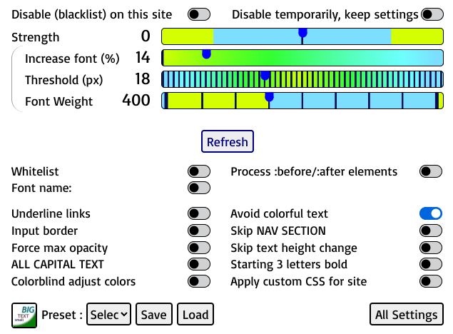

Using global CSS rules or site's Custom CSS rules, the following "internal" values can be changed to modify constants.
- --g_zoom : Sets the value of zoom when zooming. 1.75 is default for 175% (do not specify percent, value of 1 is 'no zoom', less than one is 'zoom out', and greater than one is 'zoom in'.
Default value is 1.75
- --g_max_child : This sets the maximum child elements a node should have to set its line height to a constant 115%.
Default value is 8.
- --g_zoom_keycode : Sets the keycode of key to press for zooming (and Numlock has to be on).
Default value is 16 (Shift).
- --g_zoom_padding : Sets the padding of top left bottom right areas of zoom.
Default value is 0% 15% 0% 15% for left and right 15% padding (works well on slashdot.org).
- --g_max_css_rules : The maximum number of CSS rules allowed in a stylesheet beyond which its processing is skipped.
Default value is 1000.
- --g_start3_caps : If enabled, makes "start 3 bold" option have CAPITAL text along with bold style.
Default value is false.
- --g_lightness : The value of lightness to set (less than 0.5 for a dark theme and more than 0.5 for light theme page).
Default value is the computed page lightness.
- --g_speech_language : The language of Text-To-Speech output. If not specified, it is the language specified in webpage.
Default value is webpage's language.
- --g_continue_speech : If set to true (or not false), Text-To-Speech continues reading even after zoom key is un-pressed.
If disabled, TTS stops speaking after releasing zoom key.
Default value is false.
- --g_smaller_text : Opposite of 'inverse text increase'. Text size is decreased instead of increase. Amount of decrease is adjusted by "Increase font %".
Default value is false.
- --g_bg_threshold : Foreground contrast threshold is calculated with this value added to Strength slider value to compare with foreground brightness to decide to make text color black or white.
Default value is 160.
- --g_min_colorfulness : Minimum colorfulness value to compare when "Avoid colorful text" is enabled.
Decreasing this variable will keep most colorful text unchanged. Increasing this will make less colored text into high contrast.
Default is 41.
- --g_site_reminder : Its text string gets displayed in an alert box popup on visiting the site.
Example setting for custom CSS :
html { --g_site_reminder: 'Get items\n1 Bread\n2 Milk\n3 Eggs\n'; }
Newlines have to be entered as '\n'. Text should be within quotes ('' or "").
- Most of above variables have range between 0 to 255, but can have values outside of range. These variables allow for more 'switches', which would otherwise take up a lot of space on Settings page. They provide more customizations through a non GUI-based way.
- The values can be changed by applying Custom CSS for a site or setting in global CSS rules. Example CSS rule is
html { --g_zoom: 3.0; --g_zoom_keycode: 17; }
which sets the 2 internal "constants" or
a { color: #0c0; }
which changes link color to green.
- Additional features are input box borders, underlining of links and saving/loading of settings whitelists/blacklists,
- This extension makes website text easier to read by enlarging text and increasing contrast of text color.
- VERY IMPORTANT WARNING: If you are COPY+PASTE-ing from a page which has been changed by this plugin, DISABLE the plugin for that webpage and THEN copy + paste. If you are editing or submitting HTML content online using a content management system like Wordpress or having an HTML Editor, DISABLE this extension for that particular site. Otherwise, the HTML will contain unwanted styling elements generated by the extension.
- WHEM PRINTING A WEBPAGE modified by this extension, KEEP "Disable for this site (keep settings)" enabled otherwise the PRINTING WON'T BE CORRECT.
Options guide
Clicking on the options button will open this window:

- Disable on this website: Adds the website to the blacklist.The contents of this site will not be changed.
Default value: disabled
- Disable Small Text Big on this site temporarily (keep settings): Adds the website to the blacklist but does not delete settings of site (which can be got back by disabling this).The contents of this site will not be changed but neither will customized settings be deleted.
Default value: disabled
- Strength: Adjusts the application of black/white color. This value can be adjusted to preserve website's original colors or to make it higher contrast. If it is an ODD number, INPUT text boxes color is changed to black/white for maximum contrast.
Also determines the zoom percentage value with zero (0) strength having 175% (1.75) zoom value.
Default value: 0
- Increase font (%) / Threshold (px): Enlarges fonts that are below the threshold (in pixels).
Default value: 14% / 18 px.
- Font Weight Changes bold setting of fonts from 100 (thinnest) to 900 (boldest) 400 is normal.
Default value: 400
- Whitelist: Adds the website to the whitelist. This site will have custom settings different from preset settings.
Default value: disabled
- Underline links: Adds an underline to links, to distinguish them from other text.
Default value: disabled
- Process :before/:after elements Changes text size in :before/:after elements.
Default value: disabled
- Input border: Adds a black outline around input elements. When enabled with "Start 3" disabled and "Skip links" enabled, prevents changes of width / height of input text elements and does not add border.
Default value: disabled
- Force max opacity: Forces full opacity on all fonts.
Default value: disabled
- Avoid colorful text: Attempts to avoid colorful text and links, if they are considered readable.
Default value: enabled
- Skip NAV & SECTION: Avoids changing size of NAV and SECTION elements (usually menus and large tables) and height change of INPUT elements.
Default value: disabled
- Skip text height changes: Avoids changing size text whose height is less than font size and INPUT elements like text and select boxes
Default value: disabled.
- ALL CAPITALS TEXT: Makes all text in CAPITALS.
Default value: disabled
- Colorblind adjust colors: Changes text color and background to more readable color for colorblind condition.
- Starting 3 letters bold: Starting 3 letters of words are made bold.
Default value: disabled
- Skip links in 3 letters bold: Avoids changing links when start 3 letters bold is enabled.
Default value: disabled
- Apply custom CSS for site: Lets you enter custom CSS rules for the site.
Default value: disabled
- The calculated website background colors are used to determine if site has "Light" theme (lightness greater than 0.5) or "Dark theme" (lightness less than 0.5).
On some sites this calculation may result in wrong theme choice (light website calculated as "dark" theme or reverse).
- All Settings Opens a tab with all the options, including the ability to activate the add-on everywhere, the global options (with in-depth tooltips), the whitelist/blacklist, and a link to this page.
CAUTION AND WARNING
- VERY IMPORTANT WARNING: If you are COPY+PASTE-ing from a page which has been changed by this plugin, DISABLE the plugin for that webpage and THEN copy + paste. Otherwise a lot of styling changes will also get pasted which is not on the original webpage.
- As warned below, if you are using HTML Editors in software like Wordpress or similar, disable the plugin for that website to prevent styling changes from being entered in the HTML editor.
- ALSO IF YOU TAKE A PRINTOUT OF WEBPAGE changed by this extension, IT MAY NOT PRINT CORRECTLY. SO KEEP THE "Disable for this site" option ENABLED when PRINTING.
- DISABLE PLUGIN = Select "Disable Small Text Big for this site" or "Disable Small Text Big on this site temporarily (keep settings)" option on Options menu or DISABLE "Activate on all websites" in All Settings page, whichever is preferred.
SUGGESTIONS OR ISSUES
- Please excuse me, "the developer", from issues related to speed / slowness or bugs about text / background colors. I work alone on this extension and nobody tests this except me, myself and i. Also my brain isn't what it used to be when young (i'm over 50 years old) so there are no clever or ingenious algorithms in the code. Thanks for using Small Text Big and hope the extension improves your browsing experience. Sincerely, the developer.